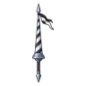
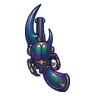
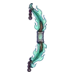

เกาะประภาคารดับ
ดูบนแผนที่และวิธีไป วางแผนฟาร์ม
ชั้นล่างในที่ราบสูง · Lv 84–92
ชั้นล่าง / ดันเจี้ยน
มอนในแมพ (6)
| มอน | Lv | ในแมพ | ธาตุ | โซน |
|---|---|---|---|---|
| 84–91 | ≈56 | วิญญาณ | ตีนประภาคาร | |
| 86–92 | ≈31 | น้ำ | ตีนประภาคาร | |
| 86–92 | ≈22 | วิญญาณ | ตีนประภาคาร | |
| 86–92 | ≈9 | มืด | ||
| 86–92 | ≈1 | น้ำ | ||
| 94–94 | 1 | ไฟ |
≈ จำนวนที่อยู่ในแมพพร้อมกันโดยเฉลี่ย คิดจากไฟล์เกม (จุดเกิดของแมพ × 4 แบ่งตามสัดส่วนของแต่ละตัว) ตายแล้วเกิดใหม่ที่เดิมใน 22 วินาที · ตอนเล่นออนไลน์เซิร์ฟเวอร์เป็นคนเกิดมอน อาจไม่ตรง
อุปกรณ์ที่ดรอปในแมพนี้
| ของ | โอกาสสูงสุด |
|---|---|
| 0.5% | |
| 0.5% | |
 หอกยาวประลองอัศวิน | 0.25% |
| 0.25% | |
 ปืนพกคู่ด้วงแรด | 0.25% |
| 0.12% | |
| 0.12% | |
| 0.12% | |
| 0.12% | |
| 0.12% | |
| 0.12% | |
| 0.06% | |
 ธนูวิญญาณพรานโบราณ | 0.06% |
| 0.06% | |
| 0.06% |